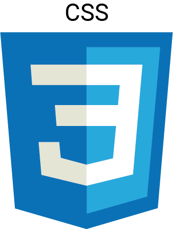

Charte Graphique
La charte graphique utilisée veut rappeler l'aspect de restauration et de nourriture qui est souvent associé à une couleur orangée. La vivacité de la couleur par endroit est là dans le but d'attirer l'oeil.
Couleurs
#EB9230
#E7511E
#111A1C
Typographies
Montsérat
C'est une typographie marquante et lisible.
A Z E R T Y U I O P Q S D F G H J K L M W X C V B N a z e r t y u i o p q s d f g h j k l m w x c v b n :/ , ; ! % ? 1 2 3 4 5 6 7 8 9 0
Technologies
